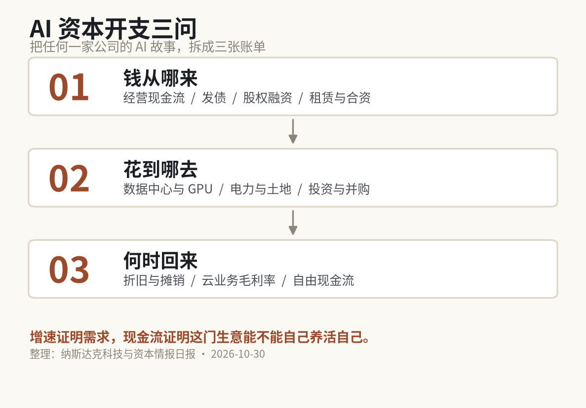
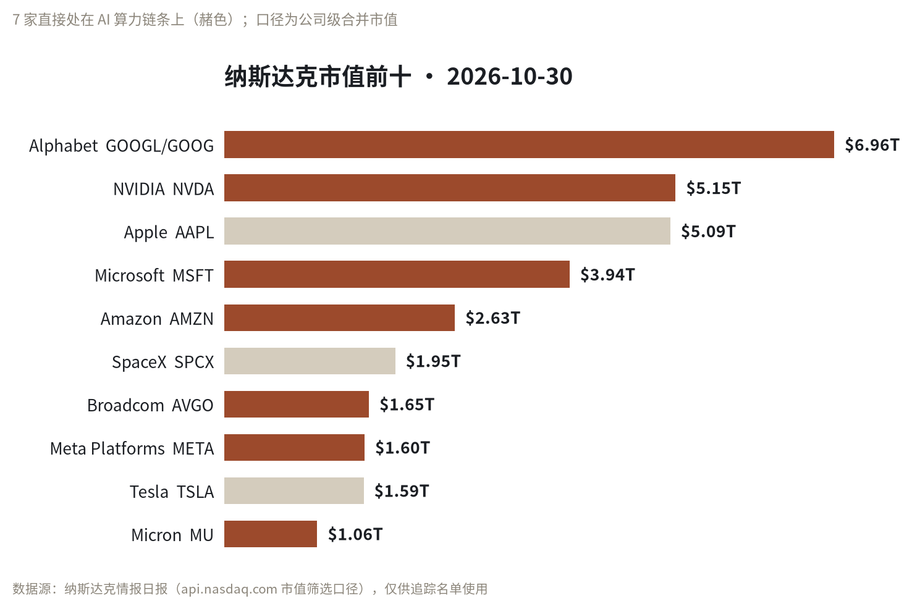

NASDAQ INTELLIGENCE · 2026-10-30
数据截止 10:10 EDT｜覆盖 10 家公司、84 个归并事件
10 月 29 日，Alphabet 交出了一份很难挑出毛病的季报：营收同比 +25%，云业务 +103%，搜索业务还在加速。
第二天，股价跌了超过 13%，一天蒸发约 5000 亿美元，创下公司史上最差单日表现。
增长最快的一天，
也是市值跌得最狠的一天。
我把 10 月 30 日这份纳斯达克情报日报从头翻到尾，最扎眼的不是某一条新闻，而是四家科技巨头在同一天给出的四种答案。
先给判断：AI 竞赛的记分牌换了。市场还在为收入增速兴奋，但已经开始给“AI 账单”定价。
接下来两个季度，决定这些巨头股价的，可能不是 AI 收入又涨了多少，而是三个更硬的问题——钱从哪来、花到哪去、什么时候回来。
01 / 103% 的增速，13% 的跌幅
这份季报最刺眼的地方，是它同时给出了两个方向的极端数字。
收入端，营收同比增长 25%，云业务增长 103%，搜索增长势头增强。支出端，AI 投入和投资亏损把利润拖到市场预期之下——这是 2022 年末以来，Alphabet 第一次盈利不及预期。
然后市场用脚投票：股价单日跌超 13%，市值蒸发约 5000 亿美元。这是估值端的损失，不是公司真的花掉了 5000 亿现金，两件事不能混为一谈。
市场不是没看见 103%，而是看见了 103% 背后的账单。
这里要说清楚一个前提：日报给这条打了“待核验”。云增速、跌幅、市值蒸发规模都来自单一媒体来源（The Motley Fool 经 Nasdaq 转载），没有拿到 Alphabet 官方财报原文。方向可以参考，具体金额请以公司披露为准。
02 / 增长回来了，现金花出去了
亚马逊的剧本不太一样。第三季度净销售额同比增长 12%，净利润同比下降，原因是上年同期含有一笔大额投资收益，属于基数效应；业绩公布后股价下跌约 6%。
真正值得看的是另一组数字：第三季度物业及设备支出达到 773 亿美元，同比翻倍以上；同期 AWS 增长 39%，是近五年最好的增速。
一边是五年来最强的云增速，一边是翻倍以上的资本开支。增长是真的，账单也是真的。
日报里还有一条标题说亚马逊“烧掉 420 亿美元现金追 AI”。这个数字和 773 亿美元不是同一口径：前者是媒体对现金消耗的概括，后者是季报里的物业及设备支出科目。两者指向同一件事，但别拿来做精确加减。
03 / 一个发债，一个融资
同一天，三家云厂商给出了几乎同级别的增速：Azure 增长 48%，AWS 增长 39%，Google Cloud 增长 103%。市场却给了三种不同的价格——微软财报后涨 4%，亚马逊跌 6%，Alphabet 跌超 13%。
这说明增速已经不是唯一变量。资金来源、支出节奏、回报路径，开始一起进入定价。
微软 2027 财年第一季度营收 923 亿美元，同比增长 19%，Azure 增长 48%，Copilot 采用范围扩大，AI 基础设施支出同时上升。它选择去债市承接这笔投入：发行 250 亿美元高级无抵押票据，已完成定价。
注意，已定价不等于已交割。票面利率、期限批次、募集资金用途，公开报道里都没有披露。
Meta 的动作更激进：据单一媒体报道，约 950 亿美元融资，用于扩建 AI 算力。这条我标成“待核验”——只有一家来源，金额性质（已经花出去、已经签约承诺，还是计划预算）也没有说明，不能当既成事实用。
当经营现金流追不上资本开支，巨头们开始动用资产负债表。
发债本身不是坏事，但它把 AI 投入从利润表问题，变成了资产负债表问题。
利润表里，AI 支出是当期费用；资产负债表里，它是未来几年要还的本金、利息和折旧。前者影响一个季度，后者影响一个周期。
04 / 一张可以带走的表
把这几件事放在一起，会得到一个很朴素的框架。我把它叫“AI 资本开支三问”，你可以拿去套任何一家正在讲 AI 故事的公司。

三问：钱从哪来、花到哪去、何时回来｜整理自 2026-10-30 日报
| 问题 | 看什么 | 这四家给出的答案 |
| 钱从哪来 | 经营现金流 / 发债 / 股权融资 / 租赁与合资 | 微软：250 亿美元票据；Meta：约 950 亿美元融资（待核验）；亚马逊与 Alphabet：主要靠经营现金流，同时承受支出压力 |
| 花到哪去 | 数据中心、GPU、电力与土地、投资并购 | 亚马逊 Q3 物业设备支出 773 亿美元；微软称 AI 基础设施支出上升（未披露金额）；Alphabet 的 AI 支出拖累盈利（未披露金额）；Meta 指向算力扩建（细节未披露） |
| 何时回来 | 折旧与摊销 / 云业务毛利率 / 自由现金流 | 四家都没有给出足够细的量化口径。这是接下来两个季度最该盯的一栏 |
第三问，是这份日报里信息最少的一栏。不是公司故意不说，是公开材料里暂时没有。
05 / 钱还在，顺序在动

数据源：api.nasdaq.com 市值筛选口径，公司级合并｜2026-10-30
前十名里，8 家是科技公司，7 家直接处在 AI 算力链条上。前四名合计市值约 21.1 万亿美元——钱没有离场，只是更集中了。
榜单里只动了一个名次：Meta 升到第 8，特斯拉降到第 9。两者市值 1.60 万亿对 1.59 万亿，只差约 100 亿美元。在 21 万亿美元的量级里，这个差距小到几乎可以忽略。
口径提醒：这是公司级合并市值，多股类公司按已上市类别合并计算，与公司披露的总市值可能有差异。榜单只用于确定追踪名单，不构成估值结论。
06 / 接下来盯这五件事
1. Meta 的官方公告或 SEC 文件，是否确认融资金额、工具与用途。现在只有单一媒体来源。
2. 微软 250 亿美元票据的票面利率、期限批次、募集用途，以及是否完成交割。
3. Alphabet 云业务 103% 的增速基数与利润率，以及 AI 支出的具体金额。
4. 亚马逊第三季度 773 亿美元物业设备支出的构成，以及全年自由现金流口径。
5. 四家云业务的毛利率与折旧政策——账单最终会落在这里。
增速证明需求，
现金流证明这门生意
能不能自己养活自己。
所以这篇不是一个“AI 泡沫要破了”的判断。我的判断更窄：AI 还在增长，但资本市场对它的计价方式变了。
下次再看到某家公司宣布加码 AI，先别急着看增速，先问那三句话。三问里有两问答不上来的，它的增长故事就只能信一半。
本文基于公开新闻与第三方数据整理，数据截止 2026-10-30 10:10 EDT；部分事件为单一来源，已在文中标注。内容不构成任何投资建议，投资有风险，入市需谨慎。